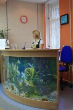

Наша детская клиника «ОННИ» оказывает платные медицинские услуги для детей
Детский медицинский центр «ОННИ» - это многопрофильный медицинский центр, оказывающий широкий спектр лечебно-профилактических услуг, как для детей, так и для их родителей. Мы позиционируем себя, прежде всего, как детский медицинский центр, или детская клиника, и поэтому имеем все необходимое для профилактики, лечения и наблюдения детей с самых первых дней жизни. У нас работают квалифицированные специалисты, доброжелательный персонал, имеется современное оборудование и проверенные годами методики.
аш уютный многопрофильный медицинский центр предлагает разовые и комплексные услуги для детей всех возрастов: консультации высоко квалифицированных педиатров и узких специалистов, лабораторные и аппаратные исследования, вакцинацию в соответствии с Национальным календарём профилактических прививок, а также это место, где можно
Детский медицинский центр «ОННИ» уделяет особое внимание комплексному подходу в лечении заболеваний, а также профилактике и восстановительной медицине, направленной не только на лечение, но и на повышение уровня здоровья и качества жизни практически здоровых людей. Мы активно используем и развиваем такие направления как физиотерапия, детский массаж, плавание (в домашних условиях), остеопатия, гомеопатия, гирудотерапия, лечебная физкультура, йоготерапия. Особое место в профилактике заболеваний мы отводим нашей соляной пещере, позволяющей как повысить сопротивляемость организма у часто болеющих детей и взрослых и укрепить их нервную систему, так и помочь справиться с упорными хроническими заболеваниями.Среди наших особых предложений:
Аппаратное лечение ЛОР заболеваний с помощью вакуумного аппарата ATMOS. Специальная установка позволяет успешно излечивать такие распространённые у детей ЛОР заболевания как отиты, ларингиты, фарингиты, хронические тонзиллиты.
Новейшее оборудование для ультразвукового обследования позволяет делать, наряду с обычными обследованиями, УЗИ головного мозга, тазобедренных суставов, сердца, гайморовых пазух
Медицинское обслуживание осуществляется в максимально комфортных для ребенка и родителей условиях в клинике или на дому. При домашнем обслуживании время всегда заранее оговаривается с родителями и согласуется с режимом дня малыша.
Наш адрес:
194295, Санкт-Петербург, пр. Просвещения, д. 33, корп. 2 тел./факс: + 7 (812) 331-17-74
Последние новости
-
29.02.2012 | Фотоконкурс
С 29 февраля по 15 апреля 2012 года детский медицинский центр «Онни» проводят конкурс на лучшее детское фото.
подробнее -
29.02.2012 | График работы в праздничные дниподробнее
-
29.02.2012 | Фотоконкурс
С 29 февраля по 15 апреля 2012 года детский медицинский центр «Онни» проводят конкурс на лучшее детское фото.
подробнее -
29.02.2012 | График работы в праздничные дниподробнее